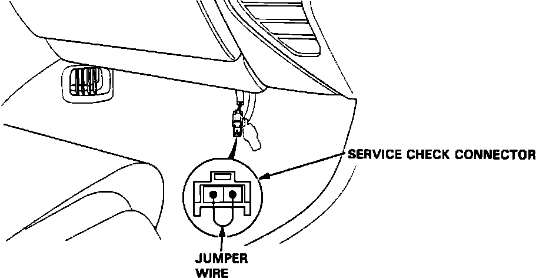
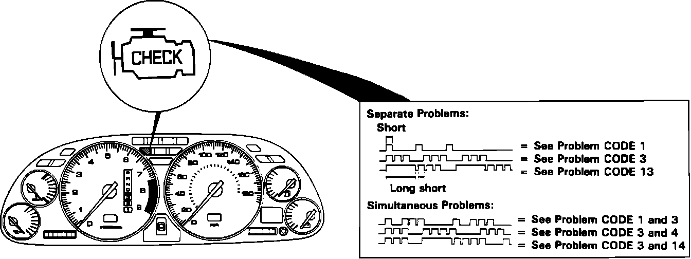

Without Scan Tool
FAILURE CODE RETRIEVALService Check Connector:

1. Connect the SERVICE CHECK CONNECTOR terminals with a jumper wire.
Check Engine Light:

2. Note the failure code. The CHECK ENGINE light indicates a system failure code by its blinking frequency. The CHECK ENGINE light can indicate any number of simultaneous component problems by blinking separate codes, one after another. Problem codes 1 through 9 are indicated by individual short blinks. Problem codes 10 through 59 are indicated by a series of long and short blinks. One long blink equals 10 short blinks. Add the long and short blinks together to determine the problem code.